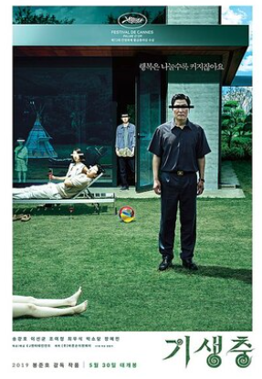

Korean Wave
메인메뉴
한류 양상
1. k-pop
- BTS 2013년 데뷔해 미국 빌보드 등 세계 차트 정상에 오른 21세기 팝 아이콘
- Black Pink K-POP 3세대 대표 아이돌 그룹 중 하나로서, 해외와 빌보드 메인 차트에서 많은 기록을 세우고 있는 세계적인 걸그룹
- PSY 2013년 3월, 싸이의 '강남스타일'은 영국에서 100만장 이상 판매되는 밀리언셀러를 기록했다.

2. 드라마
- 사랑의 불시착- 이태원 클라쓰
- 빈센조
3. 영화, OTT
- 기생충

- 오징어게임
관련기사링크
Copyright © Dahye All. rights reserved
전화 : 010-35**-****